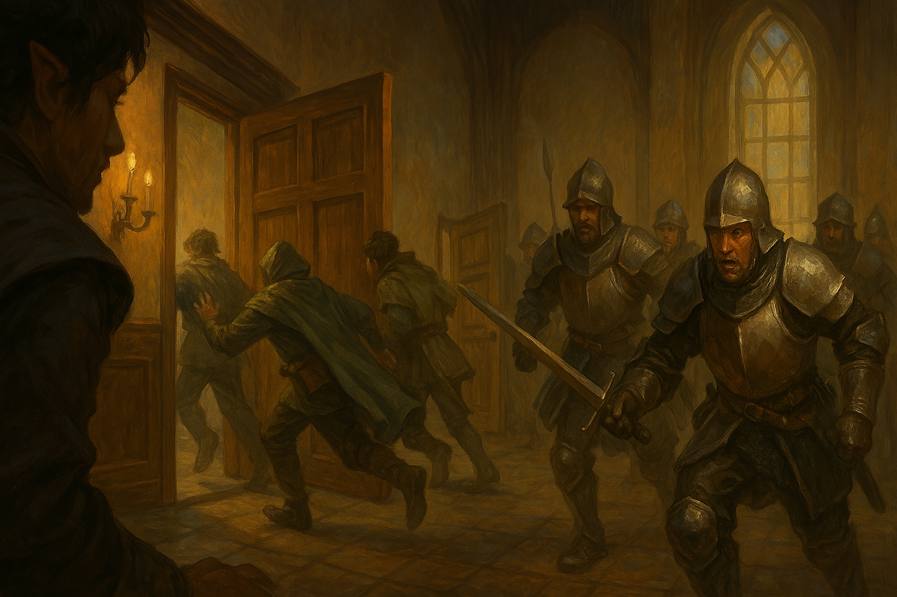

Chapter 4: Between Life and Death
Korringfield Reunion

Korringfield Reunion
15048.10.02
回到 Flaerry 爵士家，晚餐前的大廳，大家不見 Paladin 的身影。YHWH 想起 Paladin 說過他會在晚餐前回來。眾人決定回到市中心尋找 Paladin，而 Ron 則決定待在爵士宅邸等候。
大家從餐廳拿了廚師準備的麵包後便上路。有些人前往喝醉角落，想打聽些消息，也看看曾經遇到的神秘老太太是否在那裡，也許能問出些什麼，卻不見他的人影。其他人到了 Paladin 與 YHWH 分開的七彩天堂前，一樣沒有收穫。大家會合後，Samael 決定讓酷爆出來聞聞看 Paladin 的味道，他們因此走進了一處巷弄內。
巷弄分成三條小路，大家不知道哪一條比較有可能是 Paladin 的去處。Lemmy 爬上附近房子的屋頂，從高處眺望。其他人兵分三路，向前探尋。Samael 意外遇上了兩名壯碩的男子，一名披著獸皮的野蠻人，以及一名戴著頭盔的聖騎士。兩人認出了 Samael 以及後續趕上的冒險者們，便是傳單上提及的「沃瓦倫的惡魔」，威脅他們離開寇林菲爾德，他們會去向王國通報。情急之下，冒險者們攻擊了兩名男子，將他們兩人擊暈。思索著該如何處理他們的軀體，兩名衛兵逐漸逼近，冒險者們只好將衛兵殺死，也將野蠻人殺死，並偽裝成兩邊互相殺害的場面，把唯一倖存的聖騎士偷偷運回爵士宅邸。
另一方面，在冒險者們外出尋找 Paladin 的同時，Ron 聽見了宅邸門口傳來了撞擊聲。小心開門後，他看見了 Paladin 倒臥在門前，手上拿了一罐紅色的藥水。Ron 深感好奇，打開藥水蓋子，淺嚐了一口，十分辛辣。同時，Ron 也注意到 Paladin 的臉上有個很大的包紮，蓋住了他過度平坦的左耳。紗布下，還多了一個彎月的符號印在皮膚上。在 Flaerry 爵士的協助下，兩人讓 Paladin 躺臥在大廳沙發上，而 Ron 則將這罐神秘的藥水收在自己包包內。
當所有人回來後，大家把聖騎士搬到 Usioni 房內綑綁，並試圖喚醒 Paladin。大家把 Paladin 也帶回 Usioni 房間。在 Paladin 清醒後，他認得了被綑綁並剝光衣物的聖騎士，是他的二哥，Pascal。他也想起自己透過儀式製作的藥水，向 Ron 拿回後，眾人便又出發前往 Paladin 的老家，留下 Samael 和 Jiaheng 赴則看守 Pascal。
爵士帶著大家一起前往 Paladin 的老家。敲了門後，管家 Jeff 很訝異大半夜有一群人跑來，但是看到了 Paladin 後，還是讓大家都進門了。Paladin 快速地到了二樓父親的房間，和 Halloway 醫師溝通後，讓父親喝下了藥水。父親突然昏了過去，不過經過 Halloway 醫師的確認後，Paladin 的父親只是深深地睡著了。
除了 Paladin 外，眾人到了一樓大廳休息，而 Paladin 則留下來和醫生討論。醫生質疑 Paladin 太過衝動，萬一害死他的父親該怎麼辦？Paladin 表示 Halloway 醫師看起來也沒辦法把他父親治好，不如「死人當活人醫」。
Paladin 也回到了自己過去的房間，翻箱倒櫃，找到了一些金幣的私房錢帶在身上，便回到一樓和大家會合，走回爵士家。
15048.10.03
眾人醒來時，已經接近中午時間了。宅邸靜悄悄的，大家自行前往了餐廳用餐，卻沒看見爵士和爵士夫人。吃飽後，大家敲了敲爵士和夫人的房間，沒有回應，進到房間後，也沒有看見人。大家回到 Usioni 房間，思索著該如何處置 Pascal 時，似乎聽見了遠方有人逼近的聲音。
大家跑到一樓，倉皇著該怎麼做，已經有一群穿著重甲的衛兵踏了進來，大家只好朝著餐廳的方向逃竄。Lemmy 找到了餐廳後方有一扇小門，大家依序逃走，走在最後的 Jiaheng 卻被衛兵從後方抓走了。過了一段時間，Lemmy 偷偷開了後門，發現衛兵都背對著他，朝大廳走去，他便小心尾隨著，看見至少有 20 名以上的重甲衛兵，在大廳圍繞著 Jiaheng。他們似乎在討論著關於王國、帝國之類的事。Lemmy 也只好先離開了。
大家在爵士家後方討論著該怎麼做，也聽見了爵士家正門開始有了聲音。衛兵們似乎壓著 Jiaheng 離開了。大家決定先前往 Paladin 的老家躲藏，而 Lemmy 則潛行後跟隨著最後幾名衛兵，到了市中心。
其他人來到 Paladin 的老家後，看見 Paladin 的父親 Magnus 爵士神清氣爽地從二樓走了下來，Paladin 鬆了一口氣。大家尋求 Magnus 爵士的幫助，Magnus 爵士則吩咐管家準備一輛馬車，載大家離開。Paladin 向父親詢問，應該前往王國還是帝國比較安全？Magnus 爵士表示自己在王國比較有人脈，甚至報上他親生母親的名字，更有幫助。於是眾人決定前往王國的首都，麥克嵩。